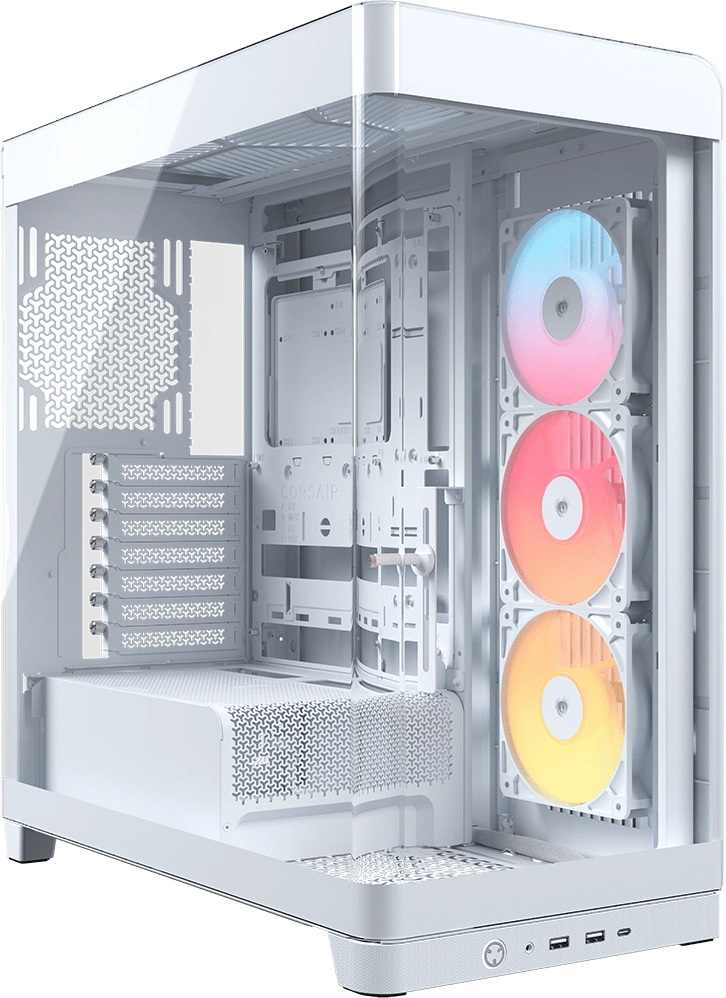
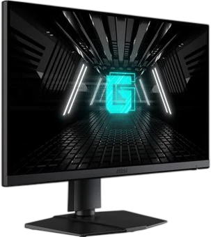
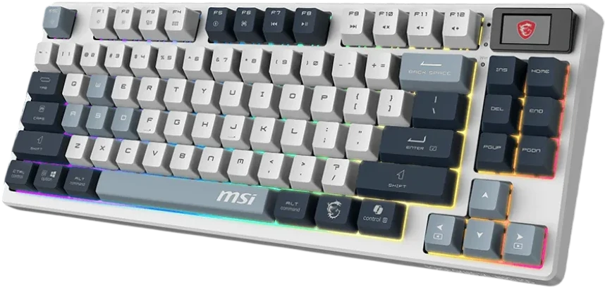
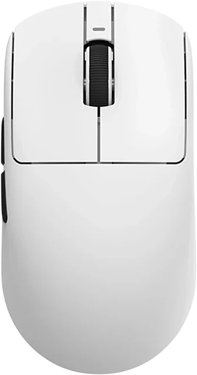
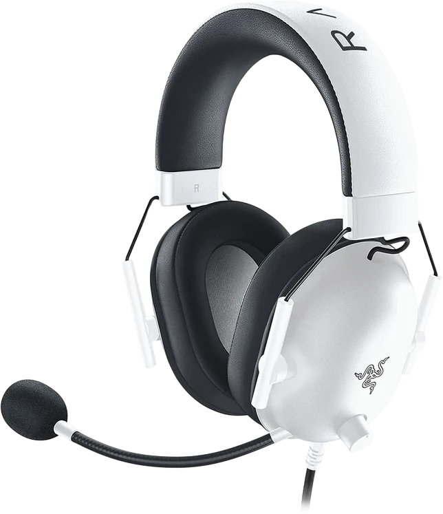

Pour le compétitif.
Baisser certains détails permet de privilégier la fluidité. L’écran monte à 180 Hz via DisplayPort ; le nombre d’images par seconde dépend du jeu et des réglages.
RYZEN 7 7800X3D / RX 9070 XT
Un montage blanc, pensé pour le jeu en QHD.
Ryzen 7 7800X3D · Radeon RX 9070 XT · 32 Go DDR5.

CORSAIR FRAME 4500XChâssis panoramique / Blanc0101 — LE PROJET
Ultime White réunit un Ryzen 7 7800X3D, une Radeon RX 9070 XT et 32 Go de DDR5 dans un Corsair FRAME 4500X blanc. Assemblée par Enzo, cette configuration est présentée ici dans le détail : composants, périphériques et budget.
02 — À L’INTÉRIEUR DE LA MACHINE
DÉFILER POUR VOIR LES PIÈCES ↓04 — GAMING EN 1440P
Une configuration pour le QHD.
Des réglages adaptés à chaque jeu.
Profils indicatifs à ajuster selon la version du jeu, les pilotes et la fluidité recherchée. Aucun benchmark de ce PC n’a été réalisé : les 180 Hz sont la capacité de l’écran, pas une promesse de FPS. Captures éditeurs issues des pages Steam, non réalisées sur ce PC.
Visuels & jeu ↗LES RÉGLAGES DÉPENDENT DU JEU
Baisser certains détails permet de privilégier la fluidité. L’écran monte à 180 Hz via DisplayPort ; le nombre d’images par seconde dépend du jeu et des réglages.
Le 1440p est la définition de cet écran. Textures, ombres et éclairage peuvent se régler séparément pour garder les détails qui comptent le plus.
Il faudrait un autre écran. La RX 9070 XT peut aussi servir en 4K, avec des réglages adaptés et, selon le titre, de l’upscaling.
05 — LES PÉRIPHÉRIQUES
L’écran, le clavier, la souris
et le casque du setup.

MSI G272QPF E2

MSI FORGE GK600 TKL Wireless Sky FR

VXE R1 Pro Max Wireless

Razer BlackShark V2 X
06 — LE PRIX DU MONTAGE
Le budget des huit pièces.
Sans les périphériques.
d’écart au total
Prix d’achat communiqués par Enzo. Prix de comparaison issus d’offres neuves relevées le 21 octobre 2026, en euros TTC, hors frais de livraison ; montant de comparaison du SSD communiqué par Enzo. Les prix barrés sont des montants de comparaison, pas des anciens prix d’achat ni une promotion en cours. Certaines offres proviennent de vendeurs Marketplace ; elles ne représentent pas nécessairement le meilleur prix du marché. Périphériques exclus.
ULTIME WHITE / ENZO